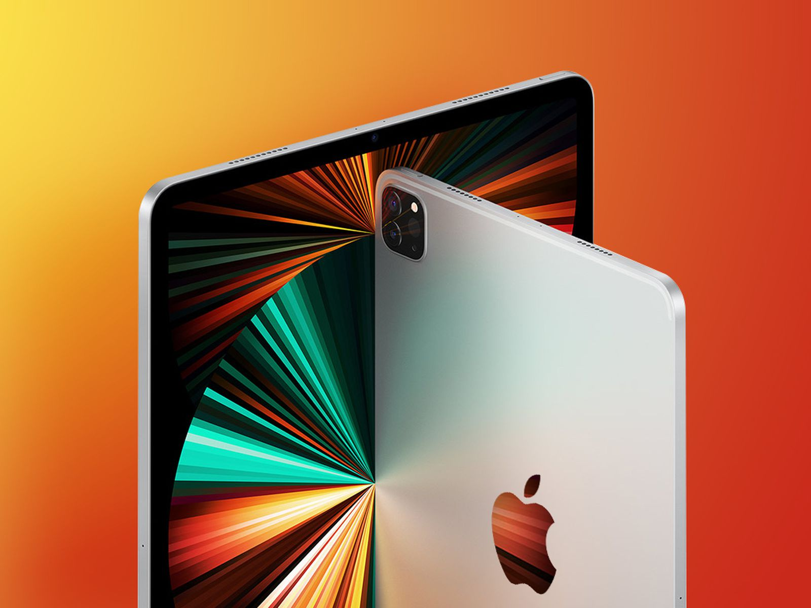
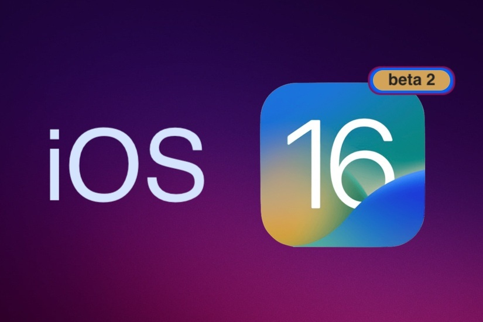

-
تکنولوژی
دستهبندی
تکنولوژی>تبلت
جدیدترین اخبار حوزه های متنوع تکنولوژی: موبایل، تبلت، لپ تاپ، گجت،اپلیکیشن، بازی، دوربین و …
داغ ترین مطالب
آخرین اخبار

تبلت Xiaoxin Pad Pro 2022 لنوو بهزودی در رنگبندی متنوع معرفی خواهد شد
لنوو تأیید کرد تبلت Xiaoxin Pad Pro ۲۰۲۲ بهزودی معرفی خواهد شد. این محصول در رنگبندی متنوع و با نمایشگر AMOLED با نرخ نوسازی ۱۲۰ هرتز عرضه خواهد شد.
اولین تبلت تاشدنی سامسونگ تا شش ماه دیگر به بازار میآید
سامسونگ بهزودی اولین تبلت سری گلکسی را با قابلیت تاشدن صفحهنمایش رونمایی میکند.
تبلت Ultra Tab ال جی با نمایشگر ۱۰ اینچی و تراشه Snapdragon 680 معرفی شد
الجی تبلت اندرویدی جدید خود موسوم به Ultra Tab را معرفی کرد. این محصول از صفحهنمایش ۱۰ اینچی LCD بهره میبرد و به تراشهی Snapdragon 680 و ۴ گیگابایت رم مجهز شده است.

رندرهای جدیدی از تبلت میانرده گلکسی تب A7 2022 سامسونگ منتشر شد
سامسونگ در حال کار روی یک تبلت میان رده جدید با نام «گلکسی تب A7 2022» است و حالا پیش از برگزاری رویداد آنپکد بعدی این شرکت در 19 مرداد رندرهای این ...
طرح شماتیک نسل دهم آیپد طراحی جدید ماژول دوربین پشتی و شاسی تخت آن را نشان میدهد
انتظار میرود اپل در پاییز سال جاری مدل جدید آیپد ۱۰٫۲ اینچی را معرفی کند. این محصول احتمالاً با تراشهی A14 و پشتیبانی از 5G و درگاه USB C برای شارژ و انتقال داده عرضه خواهد شد.
آیپد پرو 2022 احتمالاً دو کانکتور چهار پین جدید برای اتصال لوازم جانبی خواهد داشت
شایعهی جدیدی دربارهی آیپد پرو ۲۰۲۲ منتشر شده است که نشان میدهد این محصول احتمالاً برای اتصال به لوازم جانبی از دو کانکتور چهار پین جدید روی لبههای بالا و پایین بهره خواهد برد.
اپل احتمالا جک هدفون را از نسل بعدی آیپد ارزانقیمت خود حذف میکند
بر اساس رندرهای جدید منتشر شده از دهمین نسل آیپد، اپل به دنبال حذف جک هدفون از این تبلت است.
کانالیس از افت فروش رایانه شخصی و تبلت برای چهارمین فصل پیاپی خبر میدهد
طبق گزارش کانالیس، اپل و سامسونگ در سه ماهه دوم سال 2022 همچنان برترین فروشندگان تبلت جهان بودهاند.
آخرین اخبار

هواوی از تبلت میت پد پرو 11 با چیپ اسنپدراگون 888 و 870 رونمایی کرد
هواوی از تبلت (11 MatePad Pro) خود رونمایی کرد که از آن به عنوان باریکترین و سبکترین تبلت 11 اینچی جهان با اندازه 5.9 میلیمتر و وزن 449 گرم یاد شده .

شیائومی احتمالا بهزودی از چهار تبلت جدید تحت سری پد 6 رونمایی میکند
ظاهرا شیائومی امسال 4 تبلت از سری پد 6 را برای عرضه آماده کرده که در اندازههای 10.4، 12.6، 14 و 11 اینچ از راه میرسند.
اولین تبلت ردمی احتمالاً با نام ردمی پد 5G و با شارژ ۶۷ وات بهزودی معرفی خواهد شد
تصویری از تبلت ردمی پد 5G در دنیای واقعی منتشر شده است که طراحی بدنهی پشتی آن را نشان میدهد. انتظار میرود این محصول بهزودی در بازار هند معرفی شود.
اپل در آیپد OLED روی کیفیت تصویر و وزن پایین تمرکز میکند
اپل در محصولات آیپدهای اولد که احتمالا در سال 2024 عرضه میشوند، روی وزن و ضخامت پایین و همچنین کیفیت بالای تصویر تمرکز دارد.

تبلت 10 اینچی اچتیسی A101 با تراشه Unisoc T618 معرفی شد
تبلت اچتیسی A101 به شکل رسمی معرفی شد. این تبلت میانرده دارای ویژگیهایی کلیدی مانند نمایشگر 10 اینچی، تراشه Unisoc، دوربین پشتی دوگانه و همچنین یک باتری بزرگ است.
تبلت نوکیا T10 با نمایشگر 8 اینچی و قیمت 160 دلار معرفی شد
شرکت HMD Global از جدیدترین تبلت نوکیا با نام T10 رونمایی کرد که محصولی اقتصادی با نمایشگر 8 اینچی و تراشه Unisoc است. البته به گفته این کمپانی، خریداران تا 3 سال ...
مشخصات کلیدی لنوو Xiaoxin Pad Pro 2022 پیش از عرضه فاش شد
دریافت گواهی 3C توسط Xiaoxin Pad Pro 2022 باعث شد مشخصات کلیدی این تبلت لنوو فاش شود.
تبلت شیائومی بوک اس 12.4 معرفی شد؛ تراشه ARM با ویندوز 11
شیائومی از یک تبلت ویندوزی جدید به نام Book S 12.4 رونمایی کرد. این محصول به تراشه اسنپدراگون 8cx Gen 2 مجهز شده
آخرین اخبار
آیپد در iOS 16 احتمالا قابلیت هوم هاب هوشمند خود را از دست میدهد
پس از انتشار سیستمهای عامل iOS 16 و iPadOS 16 در پاییز امسال، ظاهرا دیگر آیپدها قابلیت هوم هاب هوشمند خود را از دست میدهند.
تبلت «ریلمی پد X» با نمایشگر 11 اینچی و اسنپدراگون 695 معرفی شد
تبلت ریلمی پد X از نمایشگر 11 اینچی LCD با وضوح 2K، تراشه اسنپدراگون 695 و باتری 8340 میلی آمپرساعتی بهره میبرد.
تامینکنندگان اپل روی نسل دوم پنلها برای آیپدهای OLED کار میکنند
شنیدهها حاکی از آن هستند که سامسونگ در حال مذاکره بر سر قیمت تجهیزات و اجزای پنل نمایشگر اولد نسل 8.5 است که جهت ساخت نمایشگر در دستگاههایی مانند تبلت کاربرد دارد. از قرار معلوم ...
اوپو از تبلت پد ایر و ایرباد Enco R
رونمایی کرداوپو یک تبلت جدید به همراه یک ایرباد بیسیم معرفی کرد. این تبلت 10 اینچی به نام پد ایر، دومین تجربه این برند در ساخت تبلت محسوب میشود.
سامسونگ پنج تبلت میانرده جدید در دست توسعه دارد
سامسونگ برترین تولیدکنندگان تبلت جهان محسوب میشود. حالا گفته میشود که قصد دارند تا پایان سال جاری، پنج تبلت میان رده جدید را در بازههای قیمتی مختلفی وارد بازار کنند.
تبلت هواوی MatePad SE با تراشه Kirin 710A معرفی شد
هواوی اخیرا از جدیدترین تبلت خود با نام هواوی MatePad SE رونمایی کرده است. این تبلت مجهز به تراشه Kirin 710A و HarmonyOS 2.0 بوده و برچسب قیمتی آن حدود 227 دلار است.
آیپد پرو بعدی با تراشه M2 احتمالا پاییز امسال معرفی میشود
اپل احتمالا در حوالی زمانی سپتامبر تا نوامبر امسال از نسل جدید آیپد پرو با تراشه M2 رونمایی خواهد کرد.
امسال آیپد پرو 11 اینچی به نمایشگر مینی LED مجهز نمیشود
اپل نسخه مینی LED آیپد پرو 11 اینچی خود را در سال 2022 روانه بازار نخواهد کرد، زیرا مدل 12.9 اینچی فروش بسیار خوبی دارد.